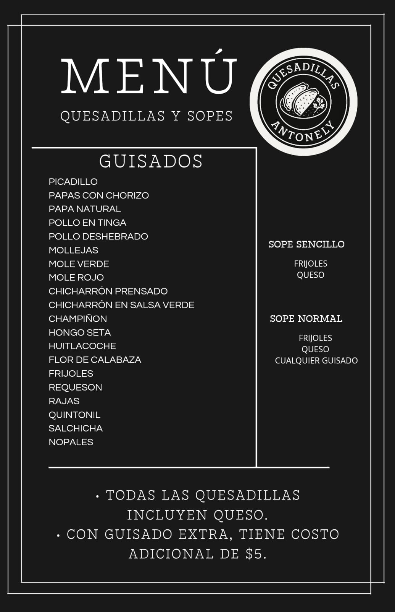

Mas de 15 años haciedo las mejores quesadillas


Desde 2010, compartiendo sabor y tradición
En Quesadillas Antonely comenzamos con un pequeño puesto familiar en 2010, con la idea de llevar a cada paladar el auténtico sabor de la quesadilla tradicional. Desde entonces, hemos trabajado con amor, ingredientes frescos y una sazón única que nos distingue. Nos encanta ver a nuestras y nuestros clientes sonreír con cada bocado. Cada quesadilla que servimos está hecha con el corazón y con la misma pasión con la que empezamos aquel primer día. ¡Gracias por ser parte de nuestra historia!
Nuestro Menu
Haz tu pedido al:
Síguenos en Facebook
¿Dónde estamos?
Nos encontramos en el tianguis de Avandaro los dias lunes en el horario de 9:00am-5:00pm
Ubicación
Encuéntranos aquí: Ver en Google Maps